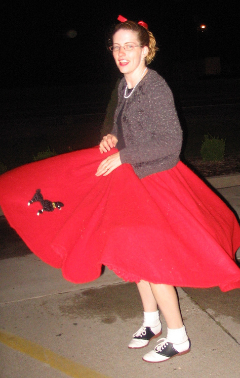
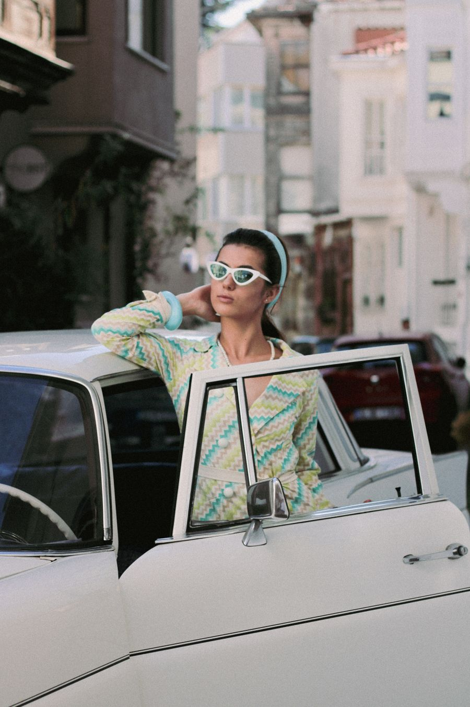
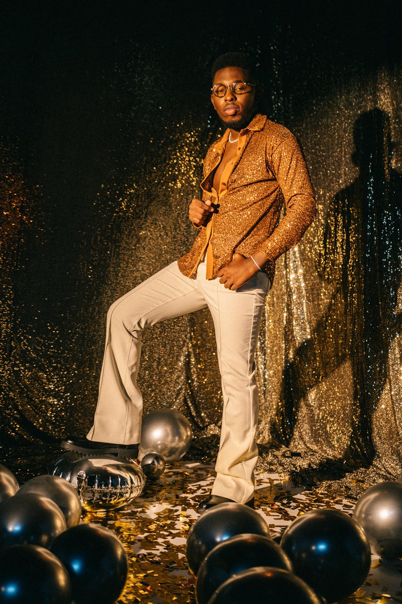
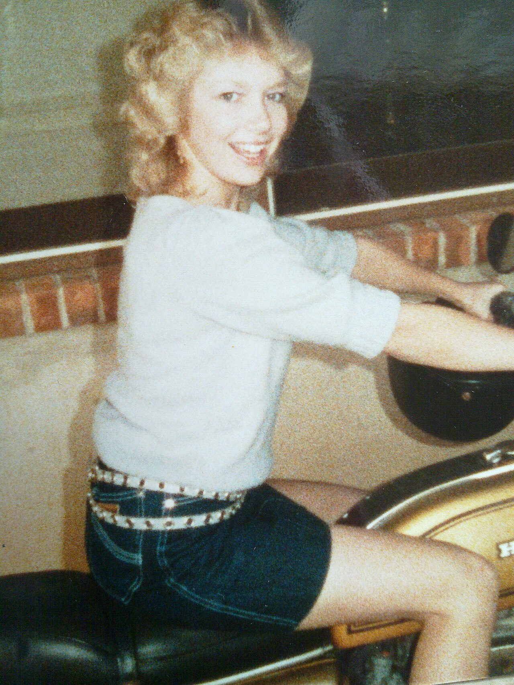
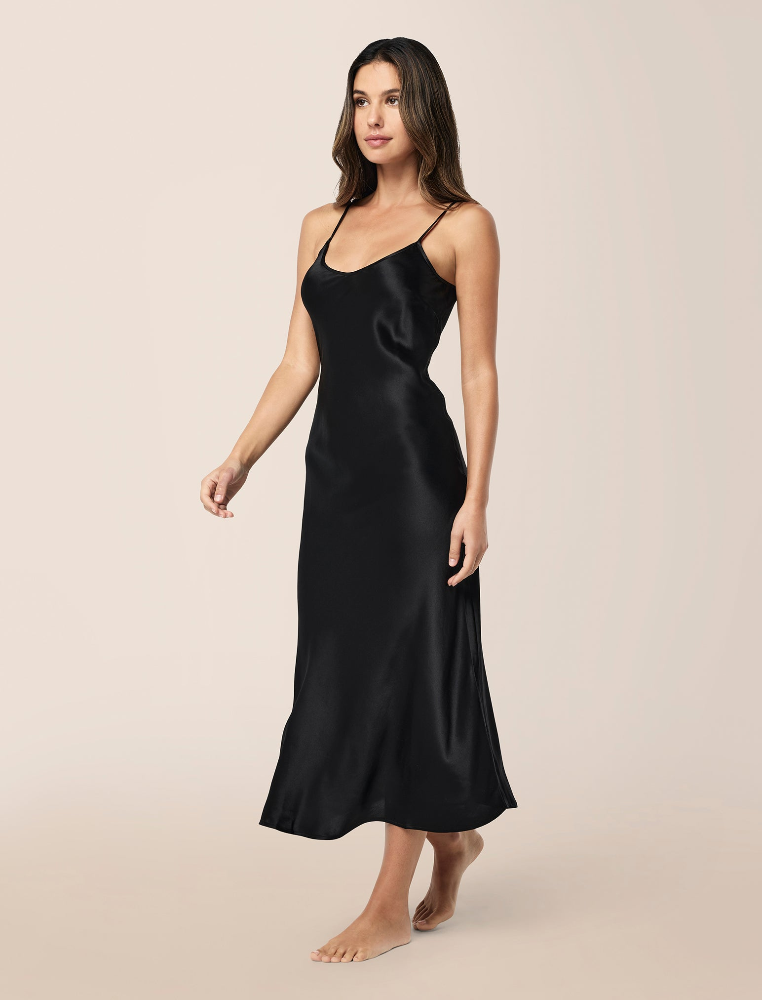
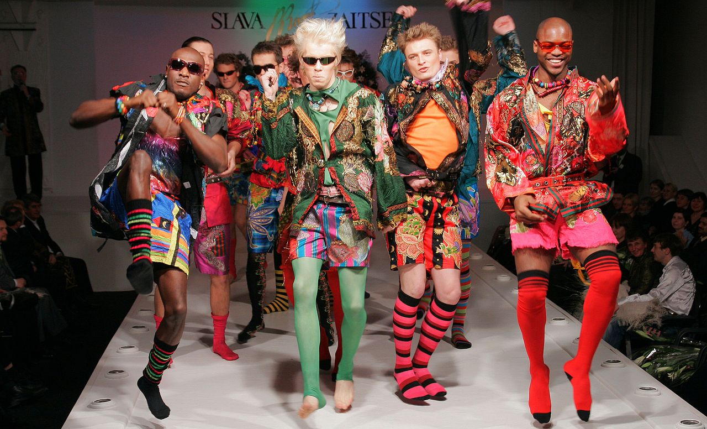
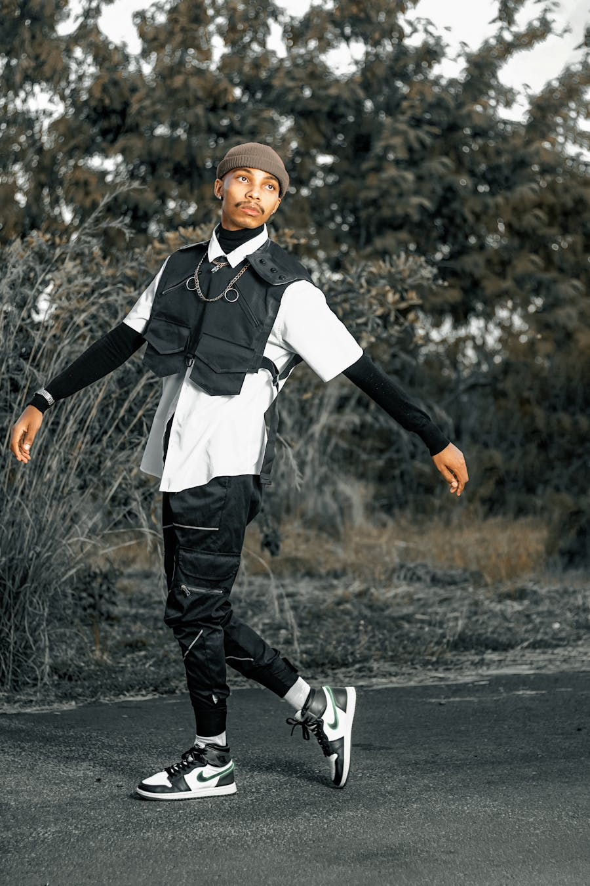

Travel through seventy years of fashion history. Each decade tells its own story - through its silhouettes, its icons, and the spirit of its time.
Scroll from post-war elegance into today's runway.

1950sDior's 1947 New Look set the tone - femininity, cinched waists, full skirts, and gloves. A return to luxury after years of war-time austerity.

1960sMary Quant invented the mini skirt. Twiggy became the face of the era. The Mod movement on Carnaby Street rewrote the rules of youth fashion.

1970sThe decade of freedom. Bell-bottoms and prairie dresses by day, sequins and Halston jersey by night at Studio 54.

1980sShoulder pads invaded the boardroom. Pop stars wore Versace and Armani. Bigger was better - louder colour, taller hair, bolder logos.

1990sTwo extremes ruled side by side: stark minimalism (Helmut Lang, Calvin Klein) and grunge (flannel, ripped jeans). And the rise of the supermodel.

2000sLow-rise jeans, velour tracksuits, and It-bags. The decade that confused everyone, and that Gen Z would obsessively revive twenty years later.

2010sHoodies became couture. Off-White, Supreme, and Yeezy redefined luxury. Instagram turned every street corner into a runway.
Vintage and resale boomed. Genderless and size-inclusive collections moved to the centre. Y2K came back. So did corsets.
Tap (or click) to reveal each decade's defining look.
Christian Dior, 1947. Cream silk jacket over a black wool skirt - the silhouette that relaunched Paris.
Mary Quant, 1964. Six inches above the knee - a piece of fabric that defined a generation.
Yves Saint Laurent, 1966. The tuxedo for women. Sharp, sensual, scandalous - and timeless.
Giorgio Armani, 1980. Soft tailoring, broad shoulders. Boardroom armour for a new generation of women.
Calvin Klein, 1994. Bias-cut satin. The lingerie that quietly became evening wear.
Juicy Couture, 2001. Pastel velour, rhinestone letters. Loungewear becomes status.
Kanye West & Adidas, 2015. A streetwear shoe that taught luxury houses how to queue.
Daniel Lee for Bottega Veneta, 2020. Soft, intrecciato, no logo. Quiet luxury, defined.
Each decade has its makers. Explore the styles and the names that defined them.
Discover Designers & Icons